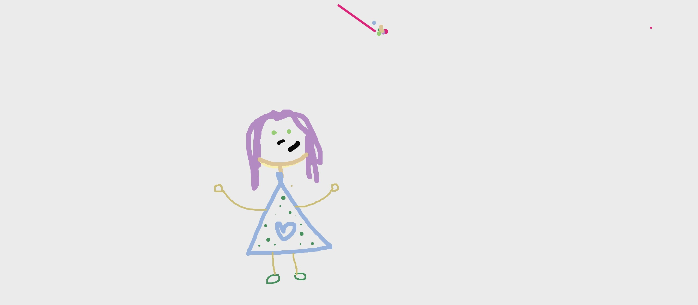
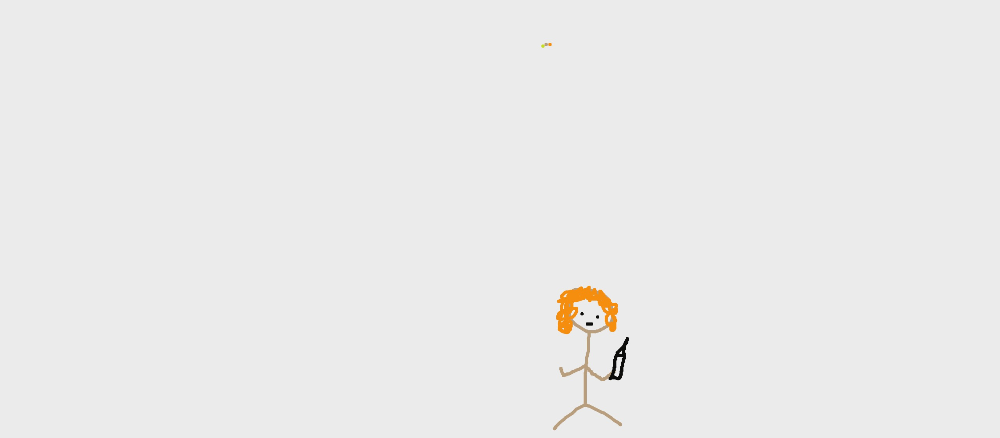

Este es el dibujo de José Ignacio, diseñador de la UAI.
No le gustó el programa pues la elección de colores era poco amigable según él. Esta es Antonia, hermana de José Igancio, diseñadora egresada de la UC.
Le gustó dibujarse, dijo que no hacía desde pequeña.
Josefina es estudiante de diseño en la UC.
Comenta que no le gusta dibujar con el mouse, por lo que no le gustó mucho hacerlo.